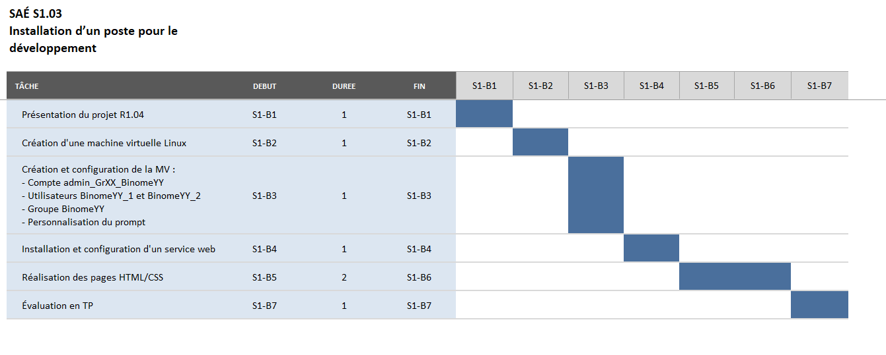

A PROPOS
Le but de cette SAÉ (situation d’apprentissage et d’évaluation) est dans un premier temps de s’initier à la technique de virtualisation en installant un environnement de virtualisation et en créant une machine virtuelle. Dans un second temps, il s’agit d’installer un serveur web et de l’utiliser pour mettre en ligne le rapport de la SAE.
Notre diagramme de Gantt :
